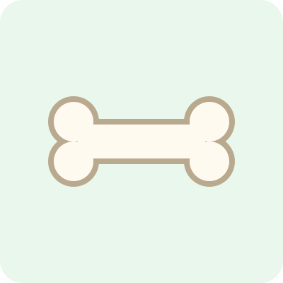
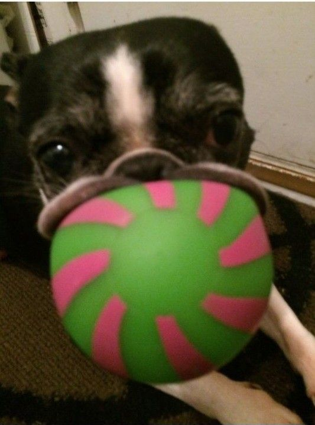

Los perros
El perro es uno de los animales que más tiempo ha vivido junto a las personas.



Los perros acompañan a las personas desde hace miles de años. Con el tiempo se volvieron animales de compañía, de trabajo y de ayuda, y hoy existen cientos de razas de todos los tamaños.
Son animales muy sociables y leales. Disfrutan jugar, salir a pasear y estar cerca de su familia, y suelen mostrar su alegría moviendo la cola cuando ven a alguien conocido.
Un perro necesita comida adecuada, agua limpia, ejercicio diario y visitas al veterinario. También necesita cariño y paciencia, sobre todo al enseñarle órdenes básicas como sentarse o venir cuando se le llama.
Cuidados básicos
Hay que darle alimento para perros según su edad y tamaño, y siempre dejarle agua limpia a su alcance.
Necesita salir a caminar y jugar todos los días para gastar energía y mantenerse sano.
Las vacunas y las revisiones con el veterinario ayudan a prevenir enfermedades.
¿Sabías que? El olfato de un perro es mucho más sensible que el nuestro, por eso hay perros que ayudan en labores de búsqueda y rescate.